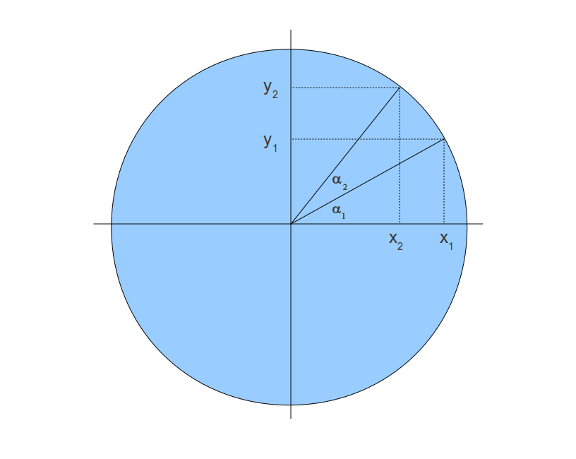
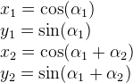
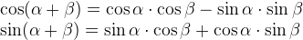
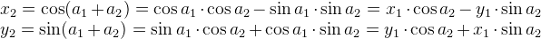
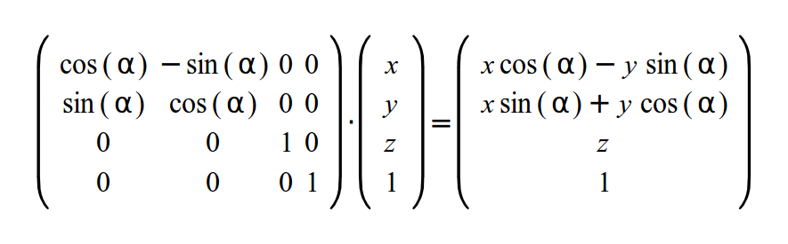
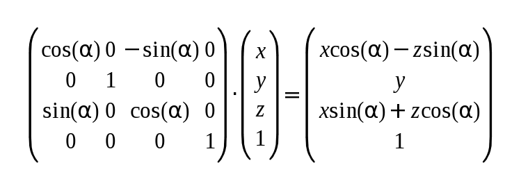
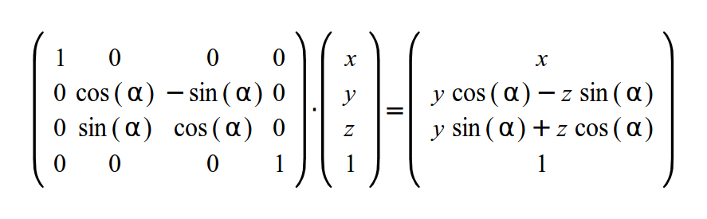

Background
Next on our transforation list is the rotation, that is, given an angle and a point we want to rotate the point around one of the axis. We will always change two out of the trio X, Y and Z and leave the third component unchanged. This means that the path will lie on one of the three major planes: XY (when turning around Z), YZ (when turning around X) and XZ (when turning around Y). There are more complex rotation transformations that allow you to rotate around an arbitrary vector but we don't need them at this stage.
Let's define the problem in general terms. Consider the following diagram:
We want to move along the circle from (x1,y1) to (x2,y2). In other words we want to rotate (x1,y1) by the angle a2. Let's assume that the radius of the circle is 1. This means the following:
We will use the following trigonometric identities to develop x2 and y2:
Using the above we can write:
In the above diagram we are looking at the XY plane and Z is pointing into the page. If X&Y are part of a 4-vector then the above equation can be written in matrix form (without affecting Z&W):
If we want to create rotations for the YZ (around the X axis) and XZ (around the Y axis) planes then the equations are basically the same but the matrix is arranged a bit differently. Here's the matrix for the rotation around the Y axis:
And the rotation matrix around the X axis:
Source walkthru
The code changes in this tutorial are very minor. We only change the contents of the single transformation matrix in the code.
World.m[0][0]=cosf(Scale); World.m[0][1]=-sinf(Scale); World.m[0][2]=0.0f; World.m[0][3]=0.0f;
World.m[1][0]=sinf(Scale); World.m[1][1]=cosf(Scale); World.m[1][2]=0.0f; World.m[1][3]=0.0f;
World.m[2][0]=0.0f; World.m[2][1]=0.0f; World.m[2][2]=1.0f; World.m[2][3]=0.0f;
World.m[3][0]=0.0f; World.m[3][1]=0.0f; World.m[3][2]=0.0f; World.m[3][3]=1.0f;
As you can see we rotate around the Z axis. You can try the other rotations as well but I think that at this point without true projection from 3D to 2D the other rotations look a bit odd. We will complete them in a full transformation pipeline class in the coming tutorials.
For more information on this subject check out the following video tutorial by Frahaan Hussain.
Next tutorial